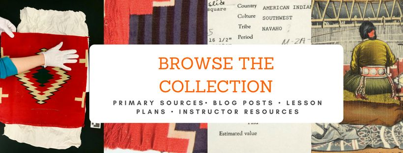
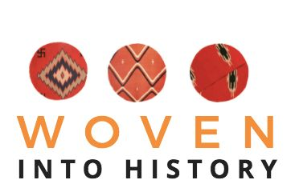

About
About this collection
About The Collector
The Collector is a teaching collection built on two archives: the 2018 Woven into History site on the Williams textiles, and Williams's own slides and ephemera at the Harry Ransom Center.
From the 2018 site
Woven into History

Project history
Woven into History

began as the final project for a graduate level Public and Digital History course at the University of Texas at Austin under Dr. Joan Neuberger. The mission of “Woven into History” is to allow the public access to the rich resources available at UT regarding the collection of donated nineteenth and twentieth-century Navajo rugs. This site aims to be a resource for educators, students, and researchers by hosting a repository of digital collections, contextualizing blog posts, lesson plans, classroom activities, and a platform for respectful collaboration and discourse.I have intentionally chosen to frame this site around the Navajo and their creations in an effort to recenter the discussion of Navajo culture and commodity production to include. While collectors and traders are described, they are not the focus of this site. However, I am aware the contents of this site reveal more about the archival process and the collector, F.A. Williams, than they do the creators of the beautiful, creative works present. Much is yet to be done to deconstruct the impact of the colonial nature of the archive on indigenous peoples, but I hope this is a step in the right direction.
Method
- Photos of textiles were used with the permission of the Art and Art History department and downloaded from the DASe (Digital Archive Service) in the Art & Art History Visual Resources Collection. Additional textiles in this UT hidden collection are available to view with a UT eid. Simply search "textiles" or "southwestern Native American" to view the entire list of digitized holdings.
- Digitized paper records can be found in the Art and Art History Collection. Contact me or Dr. Astrid Runggaldier for further information.
- Images are claimed fair use as they are antique postcards if not otherwise noted.
What changed in 2026
The WordPress site has been rebuilt as a static repository. Its textile posts became rows in textiles/textiles.csv, its paper-record posts became provenance/records.csv, and Williams's slides and ephemera from the Harry Ransom Center were added as photography/photographs.csv. Links between items live in data/crosswalk.csv, each with a confidence level and the evidence for it.
Corrections made while rebuilding are recorded in the item notes and in CORRECTIONS.md.
Cultural protocols
The textiles are Diné work collected and catalogued by non-Native people. Several Ransom Center slides show Taos Pueblo people, places and a dance, and others show Williams dressed as Native, Arctic Indigenous and Mexican people. These items are marked for community review. Before the public launch, the plan is to consult the Navajo Nation Historic Preservation Department and Taos Pueblo, apply Local Contexts labels, and withhold any image the communities ask to restrict while keeping its catalog record.
Rights and takedown
POLICY
Photos of textiles and other primary source material are used with the permission of the Department of Art and Art History, College of Fine Arts, The University of Texas at AustinOther images are claimed fair use, used under the creative commons license or taken by myself, Alina Scott. All words used, if not attributed elsewhere, are my own and I take full ownership of them. If there are any concerns about utilization of documents, images or text, feel free to contact me. As Marsha Weisiger said, “I hope that I have not done violence to the meanings they intended to impart.”This material is made available for education and research purposes only. Feel free to contact if you find anything on this site violates copyright law or personal information. We welcome updates or corrections. Upon request, we’ll remove material from public view while we address a rights issue.
Harry Ransom Center material is shown for education and research. The Ransom Center does not own the rights to these items and cannot grant or deny permission. To ask for an item to be removed from public view, open an issue on the GitHub repository.
Related resources
Digital History Collections
- Chronicling America Historic American Newspapers
- Frederic Allen Williams Digital Archive
- William Soule Photographic Archive
American Southwest
- Dreaming of Sheep in Navajo Country (Martha Weisinger)
- No Separate Refuge: Culture, Class, and Gender on An Anglo-Hispanic Frontier in the American Southwest, 1880-1940 (Sarah Deutsch)
- Comanche Empire (Pekka Hamalainen)
- Peace Came in the Form of a Woman (Juliana Barr)
- The Contested Plains: Indians, Goldseekers, and the Rush to Colorado (Elliot West)
Navajo Culture
- Reclaiming Diné History: The Legacies of Navajo Chief Manuelito and Juanita (Jennifer Nez Denetdale)
- Indian-Made: Navajo Culture in the Marketplace, 1868-1940 (Erika Bsumek)
Environmental Racism
Archival Practice
- Into the Archive: Writing and Power in Colonial Peru (Kathryn Burns)
Credits
Alina I. Scott, compiler and author of the 2018 essays and lesson plans. Dr. Joan Neuberger (course supervisor) and Dr. Astrid Runggaldier (Art and Art History). Textile photography by Steve Bourget and Kimberly L. Jones. Introductions to the Ransom Center slide groups by Jesse Ritner, PhD.